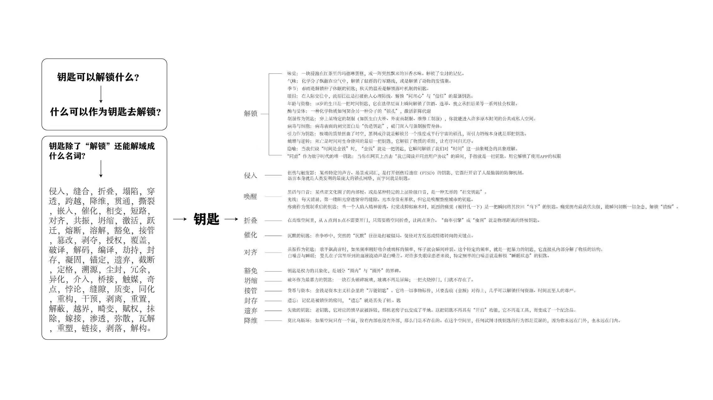

钥匙可以解锁什么？
除了门锁，它还可以解锁一段记忆、一种身份、一段关系、一个权限、一次表达、一个心理状态，甚至是一种被压住很久的情绪。
Week 02 / Semantic Expansion
第二周我把钥匙从一个名词变成一组动作。它不只解锁门，也可能解锁记忆、身份、关系、权限、创伤、情绪和新的生活状态。

Core Question
除了门锁，它还可以解锁一段记忆、一种身份、一段关系、一个权限、一次表达、一个心理状态，甚至是一种被压住很久的情绪。
密码、声音、气味、照片、路线、习惯、身体动作、他人的一句话、一次失败、一个软件按钮，都可能成为“钥匙”。
Main Argument
第一周我看到的是钥匙的物理结构，第二周我开始意识到：钥匙真正重要的地方不在于它是不是金属，不在于它是不是有齿，而在于它能让一个状态变成另一个状态。
门外变成门内，陌生变成熟悉，封闭变成开放，不确定变成确定，等待变成进入。这个转换动作才是“钥匙”最核心的含义。
因此我把钥匙延展成很多动词：侵入、缝合、折叠、坍缩、穿透、跨越、降维、贯通、撕裂、嵌入、催化、相交、短路、对齐、共振、归缩、激活、迁徙、熔断、溶解、错位、接管、授权、覆盖、破译、解码、封存、遗弃、截断、溯源、尘封、介入、桥接、触媒、质变、同化、重构、剥离、重置、瓦解、链接、解构。
Personal Narratives
刚拿到宿舍钥匙的时候，我其实没有马上想到“开门”。我想到的是，我好像终于被允许进入一个新的生活系统了。它很小，但它代表床位、柜子、灯、桌面和夜里回去时可以推开的那扇门。
这把钥匙解锁的不是门，而是归属感。它让我从一个路过的人变成这个空间的使用者。
有一次忘带钥匙，我站在门外等别人回来。门还是那扇门，房间也还是我的房间，但那一刻它变得非常陌生。钥匙不在身上时，我突然发现“属于我”和“我能进去”不是一回事。
这让我想到钥匙其实是一种权限。权限一旦丢失，熟悉空间也会瞬间变成边界。
后来很多门不再用实体钥匙，而是刷卡、密码、指纹、手机蓝牙。钥匙从手里消失了，但它没有消失，只是被藏进系统里。
这类钥匙解锁的不只是空间，还有数据、身份、记录和平台。它让我意识到，现代钥匙越来越像一种“被系统承认”的方式。
有些时候，人和人之间的关系像一扇关着的门。真正打开它的可能不是物理钥匙，而是一句解释、一次道歉、一个共同经历，或者一个别人愿意听你说完的瞬间。
所以我把钥匙理解成触发器：它让某种停滞的关系重新流动。
Semantic Matrix
从封闭到开放，适合发展成开合结构、交互机关、学习入口和任务关卡。
把断裂关系重新连接，适合转译成拼接模块、修补工具、纪念物和情绪疗愈产品。
把空间压缩又展开，适合转译成可折叠收纳盒、便携容器和展开式展示装置。
让用户获得进入资格，适合转译成门禁、身份识别、数字钥匙和权限提示界面。
把废弃物或旧经验重新组织，适合转译成废料灯具、再生材料产品和模块再利用系统。
Week 02 Conclusion
我不再把钥匙看成一个固定形状，而是把它看成一种“状态转换机制”。只要某个东西能让封闭变成开放、混乱变成路径、沉默变成表达、陌生变成归属，它就可以被理解为钥匙。
这给后续研究提供了一个重要转向：我不必只讨论像钥匙的物品，而可以继续追问什么东西能像钥匙一样，让状态发生转换。